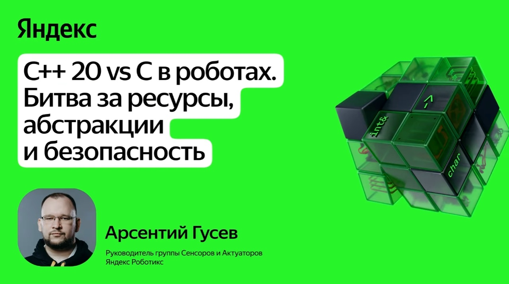

Битва за ресурсы, абстракции и безопасность · WEB.HW.01.02

Должность: руководитель группы сенсоров и актуаторов в Яндекс Роботикс.
Сфера: embedded-разработка, робототехника.
Опыт:
Практический опыт — от медицины до складской логистики — лежит в основе доклада. Спикер говорит не о теории, а о решениях, которые реально работают в production-роботах на складах.
Арсентий ведёт Telegram-канал, где рассказывает об embedded-вопросах, с которыми сталкивается сам и его коллеги.
В embedded-разработке для роботов давно идёт спор: даёт ли C++ дополнительный overhead и стоит ли уходить от C. Отрасль очень инертная, поэтому этот «холивар» будет тянуться ещё много лет.
Спикер показывает, что C++20 позволяет строить абстракции с «нулевой стоимостью» — код становится удобнее, безопаснее и быстрее в разработке, но не проигрывает C по производительности и контролю над ресурсами.
Речь о том, что constexpr, шаблоны, RAII и концепции позволяют перенести часть работы на этап компиляции и убрать накладные расходы, которые раньше считались неизбежной платой за абстракции.
Ограничения платформы: 1 МБ памяти под код и 240 КБ оперативной памяти.
Код пишется и для серверов, и для платформ с GPU, и для микроконтроллеров, которые управляют сенсорами и BLDC-моторами.
Тренд: число ядер растёт, а производительность одного ядра — почти нет. Ускорение идёт за счёт сопроцессоров (NPU) и векторизации.
Цифровая обработка сигналов — буферизация, фильтрация, частотный анализ данных с датчиков.
Real-Time Publish-Subscribe — обмен командами и телеметрией с вышестоящим API в реальном времени.
Матричные вычисления — планировщики траекторий, нейросетевой инференс, компьютерное зрение.
Табличные методы (LUT, look-up table) — способ заменить сложные вычисления быстрым доступом к заранее рассчитанным значениям. Аналогия — таблицы Брадиса для синусов и косинусов: значения считали вручную и записывали в книжку.
Есть зашумлённый сигнал с датчика. Нужно отфильтровать высокие частоты и получить гладкую кривую для управления роботом. Используется свёртка функции с фильтром — lowpass-фильтр низких частот.
constexpr auto coeffs = make_lowpass<64, 1000, 10000>();
template <int N>
class Filter {
float buf[N] = {};
public:
float apply(float x);
};
const float coeffs[64] = { 0.001f, 0.002f, /* ... */ };
struct Filter { float buf[64]; int i; };
void filter_init(struct Filter* f) {
for (int i = 0; i < 64; i++) f->buf[i] = 0;
f->i = 0;
}
Статическое связывание — соединение компонентов программы на этапе компиляции, а не во время выполнения. Компилятор «вшивает» нужные вызовы напрямую, без указателей и виртуальных функций.
На микроконтроллерах почти нет динамической памяти и нет MMU. Вся память берётся из оперативной, поэтому используется статический аллокатор. Если число объектов заранее неизвестно, в C память приходится выделять вручную. В C++20 компилятор сам посчитает, сколько нужно.
template <typename... Obs>
class Subject {
std::tuple<Obs...> obs;
public:
void notify(const Event& e) {
std::apply([&](auto&... o){ (o.on(e), ...); }, obs);
}
};
GeMM (General Matrix Multiply) — обобщённое матричное умножение. Базовая операция для нейросетей, управления и планирования траекторий.
void gemm(const float* A, const float* B, float* C, int N) {
for (int i = 0; i < N; i++)
for (int j = 0; j < N; j++)
for (int k = 0; k < N; k++)
C[i*N + j] += A[i*N + k] * B[k*N + j];
}
Оптимизация нужна не ради самой оптимизации. Она влияет на экономику: в серверных вычислениях — меньше затрат на мощности, в батарейных роботах — меньше потребление энергии.
| Энергия | MobileNetV4 | MobileNetV4 + ускорители |
|---|---|---|
| На умножение + сложение | 78,8 мДж | 1,06 мДж |
| На чтение + запись | 55 мкДж | 211 мкДж |
| Потребление, Вт·ч | 7,88 | 0,128 |
Итог: экономия энергии — 61,56 раз. Энергия на чтение/запись даже немного выросла, но это с лихвой компенсируется падением энергии на сами вычисления.
В батарейных роботах это часы дополнительной автономной работы, в облаке — миллионы сэкономленных рублей.
Каждая инстанциация шаблона порождает новый код. При слишком детальной архитектуре прошивка растёт экспоненциально. Решение — ограничивать число модулей и следить за размером бинарника.
В C++20 нет встроенной рефлексии — программа не может «посмотреть на саму себя». Это мешает сериализации, логированию и обработке ошибок. Ожидается в C++26.
Её ждут, но полноценной замены пока нет. Сейчас используются внешние скрипты, вставляющие бинарные функции в HEX-формате в код.
В прошивке на 2 МБ около 40% кода — это текст логов и сообщений. Решение: вынести текст ошибок в Doxygen-комментарии и внешний JSON, а в бинарнике хранить только код ошибки.
Исключения плохо подходят для систем, которые работают непрерывно. Спикер рекомендует boost::expected — контейнер, хранящий либо значение, либо ошибку.
boost::expected<int, Error> read_sensor() {
if (!sensor.ready()) return boost::unexpected(Error::NotReady);
return sensor.value();
}